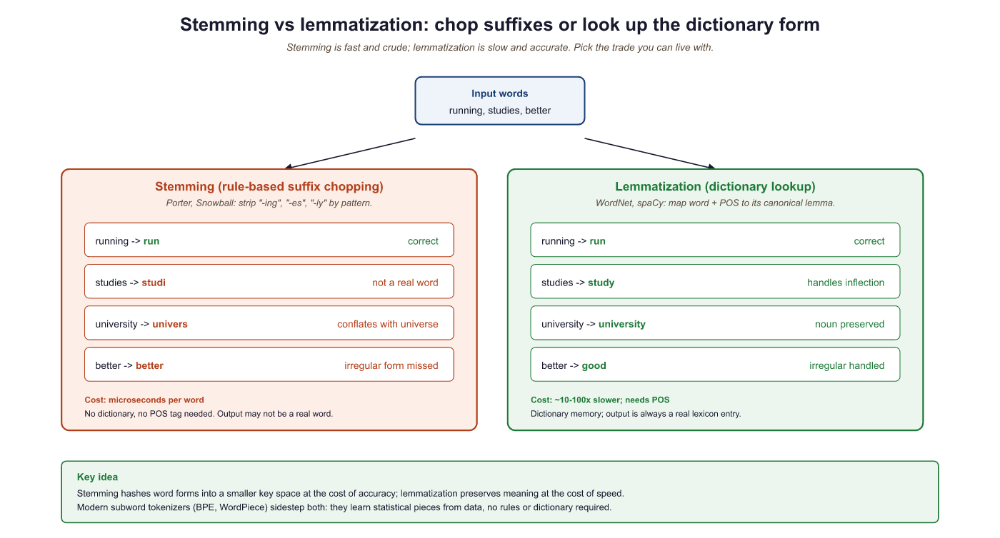
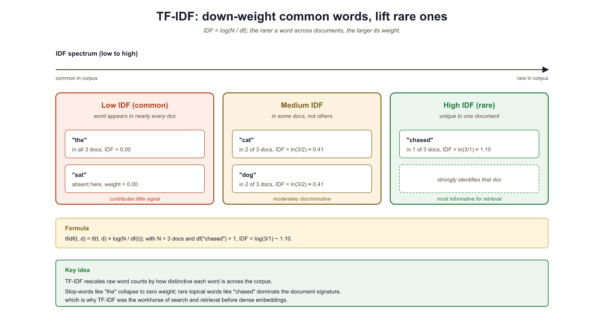
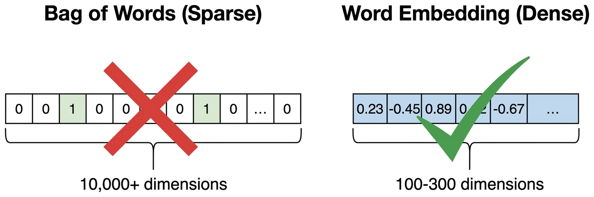
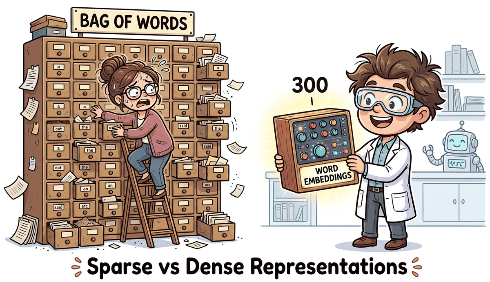

I turned "the cat sat on the mat" into a 50,000-dimensional sparse vector. The cat was unimpressed.
Lexica, Hopelessly Sparse AI Agent
Text preprocessing is about reducing noise while preserving signal. Every step (lowercasing, removing stop words, stemming) is a deliberate choice to throw away some information in exchange for a more tractable representation. Modern LLMs need far less preprocessing because they rely on subword tokenization (Chapter 1) to handle raw text, but understanding these techniques is essential for knowing why LLMs were such a breakthrough.
Prerequisites
You should be familiar with the NLP landscape and core tasks introduced in Section 1.1. Basic Python skills (strings, lists, dictionaries) and comfort with the ML fundamentals from Section 0.1 are assumed. No prior NLP coding experience is required.
From Text to Numbers
Here is a question that sounds trivial until you actually try to answer it: how do you turn a sentence into numbers? The word "cat" is not inherently closer to "dog" than to "refrigerator" in any mathematical sense. Yet somehow, you need to feed text into a model that only understands vectors. This is the foundational challenge of NLP.
A machine learning model cannot read text. It operates on vectors of numbers. So every NLP system must convert raw, messy human text (with all its typos, abbreviations, Unicode characters, and grammatical variations) into a numerical representation that a model can process. This section covers the preprocessing pipeline that cleans up the mess, and the earliest (and simplest) approaches to representing the result mathematically.
The Text Preprocessing Pipeline
Here is a typical classical NLP preprocessing pipeline, from raw text to features:
Each step in this pipeline makes a deliberate tradeoff. Let us understand them before writing code:
- Unicode normalization: Converts "café" to "cafe" and "naïve" to "naive". Without this, the same word in different Unicode forms would be treated as different tokens.
- Lowercasing: Makes "The", "the", and "THE" identical. We lose the information that a capitalized word might be a proper noun, but we reduce vocabulary size significantly.
- Stop word removal: Words like "the", "is", "at", "which" appear in virtually every document and carry little distinguishing information. Removing them reduces noise. But be careful: "to be or not to be" becomes meaningless without stop words!
- Stemming vs. Lemmatization: Both reduce words to a base form, but differently:
- Stemming (Porter Stemmer): chops off suffixes using rules. "running" → "run", "studies" → "studi", "university" → "univers". Fast but crude; often produces non-words.
- Lemmatization (WordNet): looks up the actual dictionary base form. "running" → "run", "studies" → "study", "better" → "good". Slower but produces real words. This is what we will use.
Who: NLP engineer at a social media analytics startup building a sentiment classifier for product reviews
Situation: Processing 500,000 Amazon product reviews. The preprocessing pipeline included lowercasing, stop word removal, and stemming before feeding into a Naive Bayes classifier.
Problem: Accuracy on positive vs. negative sentiment was only 64%, barely above random chance. Manual inspection revealed that reviews containing "not good," "not recommended," and "don't buy" were consistently misclassified as positive.
Dilemma: The team could keep stop words (increasing vocabulary size from 12,000 to 45,000 and slowing inference 3x), use bigrams to capture negation patterns (increasing dimensionality further), or switch to a deep learning model that handles raw text.
Decision: They kept negation words ("not," "no," "don't," "never," "neither") in the stop word list while removing the rest, and added bigrams to capture negation patterns like "not_good."
How: Created a custom stop word list by removing 6 negation terms from NLTK's default list. Used TfidfVectorizer(stop_words=custom_list, ngram_range=(1,2)).
Result: Accuracy jumped from 64% to 83%. Vocabulary grew modestly to 28,000 features (not the full 45,000). Inference speed remained under 10ms per review.
Lesson: Preprocessing decisions are task-dependent. Removing all stop words is appropriate for topic classification but destructive for sentiment analysis, where negation words carry critical signal.

Let us implement the full pipeline in Python:
# Complete text preprocessing pipeline
import re
import unicodedata
import nltk
from nltk.corpus import stopwords
from nltk.stem import WordNetLemmatizer
nltk.download('stopwords', quiet=True)
nltk.download('wordnet', quiet=True)
def preprocess(text: str) -> list[str]:
"""Full preprocessing pipeline: raw text to clean token list."""
# Step 1: Unicode normalization (e.g., "café" to "cafe")
text = unicodedata.normalize('NFKD', text)
# Step 2: Lowercase
text = text.lower()
# Step 3: Remove non-alphabetic characters (keep spaces)
text = re.sub(r'[^a-z\s]', '', text)
# Step 4: Tokenize (split on whitespace)
tokens = text.split()
# Step 5: Remove stop words
stop_words = set(stopwords.words('english'))
tokens = [t for t in tokens if t not in stop_words]
# Step 6: Lemmatize
# Note: WordNetLemmatizer defaults to noun lookup when no POS tag is provided.
# This means "running" stays as "running" (it is not a noun). To lemmatize verbs
# correctly, you must pass pos='v'. Compare the spaCy version below, which handles
# POS tagging automatically.
lemmatizer = WordNetLemmatizer()
tokens = [lemmatizer.lemmatize(t) for t in tokens]
return tokens
# Example
raw = "The cats were running quickly across the beautiful gardens!"
print(preprocess(raw))
# Output: ['cat', 'running', 'quickly', 'across', 'beautiful', 'garden']
# Notice "running" is NOT lemmatized to "run" because no POS tag was provided.
# NLTK's WordNetLemmatizer assumes every word is a noun by default.# Bag-of-Words with scikit-learn: CountVectorizer tokenizes documents
# and builds a term-frequency matrix where each row is a document vector.
from sklearn.feature_extraction.text import CountVectorizer
documents = [
"The cat sat on the mat",
"The dog sat on the log",
"The cat chased the dog",
]
vectorizer = CountVectorizer()
X = vectorizer.fit_transform(documents)
print("Vocabulary:", vectorizer.get_feature_names_out())
print("Vectors:")
print(X.toarray())
# Output:
# Vocabulary: ['cat' 'chased' 'dog' 'log' 'mat' 'on' 'sat' 'the']
# Vectors:
# [[1 0 0 0 1 1 1 2] "The cat sat on the mat"
# [0 0 1 1 0 1 1 2] "The dog sat on the log"
# [1 1 1 0 0 0 0 2]] "The cat chased the dog"Before reading further, paste the code above into a Python console and try preprocessing your own text. Try a tweet with hashtags and emojis. Try a paragraph from Wikipedia. Try text in another language. Notice what gets lost and what gets preserved. This hands-on intuition is more valuable than memorizing the steps.
Every preprocessing step is a deliberate act of information destruction. Lowercasing throws away capitalization cues. Stop word removal discards grammatical structure. Stemming reduces vocabulary at the cost of precision. The art is knowing which information is noise for your specific task and which is signal. This is why modern LLMs skip most of these steps: with enough parameters and data, the model can learn what to ignore on its own.
Here is the same pipeline using spaCy, the industry standard for modern NLP preprocessing. Notice how much simpler it is, because spaCy handles tokenization, POS tagging, and lemmatization in one pass:
# Same pipeline using spaCy (modern, production-grade)
import spacy
# Load the English model (run: python -m spacy download en_core_web_sm)
nlp = spacy.load("en_core_web_sm")
def preprocess_spacy(text: str) -> list[str]:
"""Preprocessing with spaCy: tokenize, lemmatize, remove stop words in one pass."""
doc = nlp(text)
return [token.lemma_.lower() for token in doc
if not token.is_stop
and not token.is_punct
and token.is_alpha]
raw = "The cats were running quickly across the beautiful gardens!"
print(preprocess_spacy(raw))
# Output: ['cat', 'run', 'quickly', 'beautiful', 'garden']
# Bonus: spaCy gives you POS tags, entities, and dependencies for free
doc = nlp("Apple released the iPhone 16 in San Francisco.")
for ent in doc.ents:
print(f" {ent.text:20s} -> {ent.label_}")
# Output:
# Apple -> ORG
# iPhone 16 -> PRODUCT (may vary by model)
# San Francisco -> GPEdoc tokens (token.lemma_, token.is_stop, token.is_punct, token.is_alpha). The second block shows the bonus that motivates using spaCy at all: named-entity recognition (doc.ents) ships with the same pipeline.Modern LLMs (GPT-4, Claude, Llama) use their own tokenizers and work with raw text. You do not need to remove stop words or stem words: the model handles all of that internally. However, understanding classical preprocessing helps you: (1) work with older ML pipelines, (2) understand what LLMs learned to do automatically, and (3) build hybrid systems where classical NLP handles the cheap/fast work and LLMs handle the complex reasoning.
Bag-of-Words (BoW)
Bag-of-Words treats language the way a toddler treats a jigsaw puzzle: dump all the pieces out, count the colors, and ignore that they were supposed to form a picture. Surprisingly, this works well enough for many classification tasks.
The simplest way to turn text into numbers: count how many times each word appears. Each document becomes a vector where each dimension corresponds to a word in the vocabulary.
Let us walk through the process step by step. Given three documents:
- "The cat sat on the mat"
- "The dog sat on the log"
- "The cat chased the dog"
Step 1: Build the vocabulary by collecting all unique words: {cat, chased, dog, log, mat, on, sat, the}. That is 8 unique words, so every document will become an 8-dimensional vector.
Step 2: For each document, count how many times each vocabulary word appears. The word "the" appears twice in document 1, so its entry is 2. The word "chased" does not appear at all, so its entry is 0.
Step 3: The result is a matrix where each row is a document and each column is a word. Notice how sparse it is: most cells are zero. This is the fundamental inefficiency of BoW.
| cat | chased | dog | log | mat | on | sat | the | |
|---|---|---|---|---|---|---|---|---|
| Doc 1: "the cat sat on the mat" | 1 | 0 | 0 | 0 | 1 | 1 | 1 | 2 |
| Doc 2: "the dog sat on the log" | 0 | 0 | 1 | 1 | 0 | 1 | 1 | 2 |
| Doc 3: "the cat chased the dog" | 1 | 1 | 1 | 0 | 0 | 0 | 0 | 2 |
# TF-IDF: weight terms by how important they are to each document.
# Common words like "the" get down-weighted; distinctive words get amplified.
from sklearn.feature_extraction.text import TfidfVectorizer
vectorizer = TfidfVectorizer()
X = vectorizer.fit_transform(documents)
print("TF-IDF vectors (rounded):")
import numpy as np
print(np.round(X.toarray(), 2))
# Notice: "the" gets a LOW weight (appears in every doc)
# while "mat", "log", "chased" get HIGH weights (distinctive)Who: Data scientist at a 50-person law firm building a document classification system to route incoming case files to the correct department (5 categories: contract, tort, family, criminal, corporate)
Situation: The firm had 2,400 labeled legal documents (about 480 per category). The data scientist initially tried fine-tuning a pretrained pretraining data model, following industry best practices.
Problem: BERT fine-tuning achieved 82% accuracy but took 4 hours on a rented GPU ($12/run). Each hyperparameter experiment cost time and money. The firm's IT team also raised concerns about sending confidential legal documents to a cloud GPU provider.
Dilemma: The team weighed three options: continue tuning BERT (expensive, privacy concerns), use TF-IDF with a traditional classifier (simple but potentially worse), or deploy a local GPU server ($8,000 upfront).
Decision: They tried TF-IDF (with bigrams, max 10,000 features) paired with a logistic regression classifier, running entirely on a local CPU laptop.
How: Used scikit-learn's TfidfVectorizer(ngram_range=(1,2), max_features=10000) and LogisticRegression(C=1.0). Training took 3 seconds. Total pipeline: 15 lines of Python.
Result: TF-IDF + logistic regression achieved 85% accuracy, outperforming the BERT model on this small dataset. The system ran on-premises with zero cloud costs and processed new documents in under 50 milliseconds.
Lesson: For small, domain-specific datasets with clear keyword signals, classical representations like TF-IDF can match or beat deep learning at a fraction of the cost and complexity. Always try the simple baseline first.
N-grams: Partially Solving the Word Order Problem
One partial fix for BoW's word-order blindness is to count n-grams (sequences of n consecutive words) instead of individual words. Bigrams (n=2) like "dog bites" and "bites man" at least capture some local word order:
# Bigrams capture some word order
from sklearn.feature_extraction.text import CountVectorizer
bigram_vec = CountVectorizer(ngram_range=(1, 2)) # unigrams + bigrams
X = bigram_vec.fit_transform(["dog bites man", "man bites dog"])
print("Features:", bigram_vec.get_feature_names_out())
print("Vectors:")
print(X.toarray())
# Features: ['bites' 'bites dog' 'bites man' 'dog' 'dog bites' 'man' 'man bites']
# Vectors:
# [[1 0 1 1 1 1 0] "dog bites man" has "dog bites" and "bites man"
# [1 1 0 1 0 1 1]] "man bites dog" has "man bites" and "bites dog"
# Now the vectors ARE different! But the vocabulary explodes quadratically.Three fatal flaws of Bag-of-Words:
- No word order: "Dog bites man" and "Man bites dog" have the exact same vector
- No semantics: "Happy" and "joyful" are as far apart as "happy" and "refrigerator". Because BoW treats each word as an independent dimension, there is no mechanism to know that two different words share meaning; the only information is whether a word is present and how often.
- Massive dimensionality: With a vocabulary of 100,000 words, each document is a 100,000-dimensional vector that is mostly zeros
TF-IDF: Weighting Words by Importance
TF-IDF (Term Frequency, Inverse Document Frequency) improves on raw counts by giving more weight to words that are distinctive for a document. Common words like "the" get downweighted because they appear everywhere; rare but informative words get upweighted.
Where:
- $TF(t, d)$ = how often term t appears in document d
- $DF(t)$ = how many documents contain term t
- $N$ = total number of documents
Worked example: Using our three documents from above. Consider the word "the":
- TF("the", doc1) = 2 (appears twice in "The cat sat on the mat")
- DF("the") = 3 (appears in all three documents)
- IDF = log(3/3) = log(1) = 0 → "the" gets zero weight! It is useless for distinguishing documents.
Now consider the word "chased":
- TF("chased", doc3) = 1
- DF("chased") = 1 (only appears in one document)
- IDF = log(3/1) = log(3) ≈ 1.1 → high weight! "Chased" is distinctive.
This is the core intuition: words that appear everywhere are useless; words that appear in only some documents are informative. TF-IDF automatically discovers this.
TF-IDF Variants: Sublinear Scaling and Normalization
The formula above is the simplest version. In practice, two refinements are standard:
Sublinear TF scaling: Raw term frequency can be misleading. A word that appears 20 times in a document is not 20 times more important than a word that appears once. The sublinear variant replaces TF with $1 + \log(TF)$, compressing the scale:
With this formula, a word appearing once gets weight 1.0, a word appearing 10 times gets weight 2.0, and a word appearing 100 times gets weight 3.0. This prevents extremely frequent terms from dominating the vector representation.
Document length normalization: Longer documents naturally have higher term frequencies. To make vectors comparable, each document's TF-IDF vector is typically normalized to unit length (L2 normalization). This ensures that a 10,000-word article and a 50-word abstract can be fairly compared using cosine similarity.
TF-IDF vectors live in a high-dimensional vector space where each dimension corresponds to a vocabulary term. In this space, documents are points (or directions, after normalization), and similarity is measured by the cosine of the angle between them. This "vector space model" (Salton et al., 1975) was the foundation of information retrieval for three decades and remains the conceptual backbone of modern search. BM25, the ranking algorithm used in most search engines today, is a refined descendant of TF-IDF that adds saturation and document length normalization in a probabilistic framework.
Both refinements ship as flags on scikit-learn's TfidfVectorizer, so the sublinear-TF and L2-normalized variant is a one-line change from the default:
from sklearn.feature_extraction.text import TfidfVectorizer
docs = [
"the cat sat on the mat",
"the dog chased the cat",
"the senator filed a bill",
]
# sublinear_tf=True applies 1 + log(tf); norm='l2' makes rows unit-length
vec = TfidfVectorizer(sublinear_tf=True, norm="l2")
X = vec.fit_transform(docs)
print(X.shape) # (3, vocab_size)
print(vec.get_feature_names_out()[:5])
Code Fragment 1.2.8: The sublinear and L2-normalized TF-IDF variant in scikit-learn. Setting sublinear_tf=True replaces raw term frequency with $1 + \log(\text{TF})$, and norm="l2" rescales each document row to unit length so a 50-word abstract and a 10,000-word article become directly comparable under cosine similarity.

# One-hot encoding: see the problem for yourself
from sklearn.preprocessing import LabelEncoder, OneHotEncoder
import numpy as np
words = ["cat", "dog", "fish", "democracy"]
label_enc = LabelEncoder()
integer_encoded = label_enc.fit_transform(words)
onehot_enc = OneHotEncoder(sparse_output=False)
onehot = onehot_enc.fit_transform(integer_encoded.reshape(-1, 1))
print("One-hot vectors:")
for word, vec in zip(words, onehot):
print(f" {word:12s} -> {vec}")
# Compute distances: every pair is equally far apart!
from scipy.spatial.distance import euclidean
print(f"\nDistance cat to dog: {euclidean(onehot[0], onehot[1]):.2f}")
print(f"Distance cat to democracy: {euclidean(onehot[0], onehot[3]):.2f}")
# Both print 1.41 (sqrt of 2): cat is as "far" from dog as from democracy!- Add a fourth document that repeats many words from documents 1 and 2. How do the TF-IDF weights change for shared words?
- Try
TfidfVectorizer(sublinear_tf=True). Compare the output to the default. Which words change the most? - Try
TfidfVectorizer(ngram_range=(1, 2))to include bigrams. How many features are there now? Do any bigrams get high weights?
TF-IDF is still used today as the backbone of BM25, the default search algorithm in Elasticsearch, Solr, and most search engines. When you build a RAG system in Chapter 32, you will combine TF-IDF-style keyword search with dense vector search. Do not dismiss classical methods. BM25 (a TF-IDF variant) still outperforms dense retrieval on many benchmarks when queries contain rare or specific terms, and it runs orders of magnitude faster because it uses inverted indexes instead of vector similarity search. The best modern RAG systems use both approaches together.
One-Hot Encoding and Its Limitations
The most basic word representation: each word is a vector with a single 1 and all other entries 0. With a vocabulary of 50,000 words, "cat" might be:
# One-hot encoding: every word becomes a sparse high-dimensional vector
# The problem: two words that mean the same thing are EQUALLY DIFFERENT
# from each other as two completely unrelated words.
import numpy as np
vocab = ["cat", "kitten", "feline", "automobile", "car"]
V = len(vocab)
one_hots = {word: np.eye(V)[i] for i, word in enumerate(vocab)}
# Distance between any two distinct words is the same constant.
def dist(w1, w2):
return float(np.linalg.norm(one_hots[w1] - one_hots[w2]))
print(f"cat vs kitten : {dist('cat', 'kitten'):.3f}")
print(f"cat vs automobile: {dist('cat', 'automobile'):.3f}")
print(f"cat vs car : {dist('cat', 'car'):.3f}")
# All print 1.414 -- one-hot encoding has no notion of similarity.The problem is devastating: every word is equally different from every other word. The Euclidean distance between any two one-hot vectors is always √2, regardless of which two words you pick (because each pair differs in exactly two positions). The distance between "cat" and "dog" is identical to the distance between "cat" and "democracy." There is no notion of similarity, no shared meaning, no semantic structure whatsoever.
In one-hot space, "dog" is exactly as far from "puppy" as it is from "quantum" or "refrigerator." There is no notion of similarity. This single limitation motivated the entire word embeddings revolution covered in Section 1.3.

With BoW/TF-IDF, we CAN: Search for documents by keyword, classify documents by topic (spam vs. not-spam), find "distinctive" words in a corpus, build simple search engines. These are real, valuable capabilities that power production systems today.
What we CANNOT do: Understand that "happy" and "joyful" are related. Distinguish "dog bites man" from "man bites dog." Handle words we have never seen before. Understand a word differently based on its context. Every one of these limitations will be solved, step by step, in the sections that follow: dense embeddings in Section 1.3, contextual embeddings in Section 1.4, and ultimately the Transformer in Chapter 3.
From Words to Topics: LSA and LDiA
Bag-of-Words and TF-IDF treat each vocabulary word as an independent dimension. The result is long, sparse, and semantically blind: "artist" and "painter" land in completely unrelated coordinates, and "bank" gets the same dimension regardless of whether the document discusses rivers or money. A natural fix is to compress the vocabulary axis into a much shorter list of latent topics, where each topic is a soft cluster of words that tend to co-occur. A typical topic representation might describe a document as "80% sport, 20% news" instead of as a 50,000-dimensional count vector.
The bridge from sparse word-count vectors to dense, learned embeddings (Section 1.3) runs through two classical algorithms that compute these topic representations: Latent Semantic Analysis (LSA) via truncated SVD and Latent Dirichlet Allocation (LDiA) as a probabilistic mixture model.
The Document-Term Matrix
Both methods start from the same input: a document-term matrix (DTM) of shape $N \times K$, where $N$ is vocabulary size and $K$ is the number of documents. Each entry holds the affinity between a word and a document, typically a raw count, a binary presence indicator, or a TF-IDF weight. The DTM is the same Bag-of-Words table from earlier, transposed and viewed as a single matrix to be factorized.
LSA via Truncated SVD
LSA approximates the DTM as the product of two low-rank matrices: a document-topic matrix and a topic-term matrix, joined by a diagonal matrix of singular values that ranks topic importance. The user picks the rank $r$, which becomes the number of topics. Rows of the document-topic matrix can then be used as dense $r$-dimensional document features for any downstream classifier or retriever, and low singular values flag noisy, incoherent topics that can safely be discarded.
Formally, the full singular value decomposition factorizes the document-term matrix as $X = U \Sigma V^{\top}$, where $U \in \mathbb{R}^{N \times N}$ holds the term-topic directions, $\Sigma$ is a diagonal matrix of singular values sorted in decreasing order, and $V \in \mathbb{R}^{K \times K}$ holds the document-topic directions. LSA keeps only the top $r$ singular values:
$$ X \;\approx\; X_r \;=\; U_r\, \Sigma_r\, V_r^{\top} $$
The Eckart-Young theorem guarantees that $X_r$ is the best rank-$r$ approximation of $X$ under the Frobenius norm; that is, it minimizes $\|X - X_r\|_F^{2}$ over all rank-$r$ matrices. The rows of $V_r \Sigma_r$ are the dense $r$-dimensional document embeddings, and the columns of $U_r \Sigma_r$ are the corresponding term embeddings in the same shared topic space.
Take the four documents from the code snippet below: two animal sentences and two politics sentences. After TF-IDF, the document-term matrix has shape $8 \times 4$ (vocabulary of about eight content words after stop-word removal). Running TruncatedSVD(n_components=2) on this matrix yields singular values approximately $\sigma_1 \approx 1.42$ and $\sigma_2 \approx 1.30$, with the remaining singular values close to zero, confirming that two topics capture nearly all the variance. The resulting document-topic matrix lands roughly at:
"the cat sat on the mat": $(+0.71, +0.10)$"the dog chased the cat": $(+0.69, +0.05)$"the senator filed a bill": $(+0.08, +0.71)$"congress voted on the bill": $(+0.09, +0.70)$
The animal documents share a near-identical signature on topic 1; the politics documents share an equally clean signature on topic 2. The same factorization tells you which words drove each topic by reading off the largest entries of $U_r$: cat, dog, chased dominate the first column; senator, congress, bill, voted dominate the second. Two dimensions have separated four documents that previously lived in eight orthogonal vocabulary directions, which is exactly what BoW and TF-IDF could not do.
In scikit-learn this is one call to TruncatedSVD on a TF-IDF matrix:
# LSA = TF-IDF + Truncated SVD. The result is a dense doc-topic matrix.
from sklearn.feature_extraction.text import TfidfVectorizer
from sklearn.decomposition import TruncatedSVD
docs = [
"the cat sat on the mat",
"the dog chased the cat",
"the senator filed a bill",
"congress voted on the bill",
]
tfidf = TfidfVectorizer().fit_transform(docs)
lsa = TruncatedSVD(n_components=2) # 2 topics
doc_topic = lsa.fit_transform(tfidf) # shape: (n_docs, 2)
print(doc_topic.round(2))
# Animal docs cluster on topic 0; politics docs cluster on topic 1.TruncatedSVD is the scikit-learn name for the rank-$r$ SVD factorization that LSA uses; the resulting doc_topic matrix is dense and short, ready to feed any downstream classifier such as a linear discriminant.LSA is still used in production, notably in semantic search and in retrieval baselines where a 200-dimensional dense vector is cheaper to index than a 50,000-dimensional sparse one. It is also the historical bridge from purely lexical retrieval (TF-IDF, BM25) to the dense vector retrieval covered in Chapter 31.
The classical pipeline closes by feeding LSA topic features into a Linear Discriminant Analysis (LDA) classifier, which finds the direction in feature space along which class clouds are maximally separated. This is a different "LDA" than LDiA (note the spelling): LDA here is a supervised classifier (related to logistic regression), while LDiA is an unsupervised topic model. The two are routinely composed: LSA compresses the document-term matrix into a short topic vector, LDA discriminates classes in that compressed space.
LDiA as a Bayesian Mixture
Latent Dirichlet Allocation (LDiA) models each topic as a distribution over words and each document as a mixture of those topic distributions. Where LSA factorizes a matrix, LDiA performs full Bayesian inference over the topic-word and document-topic distributions, typically with Gibbs sampling (covered later in Chapter 4's decoding-and-sampling material) or with variational inference. The number of topics is a hyperparameter, swept via topic coherence or held-out perplexity. LDiA remains the standard for interpretable topic models in archive analysis, survey free-text coding, and product-review mining where the deliverable is a human-readable topic, not a raw embedding.
Formally, LDiA places a Dirichlet prior on each document's topic mixture and on each topic's word distribution. For a corpus with $K$ topics and vocabulary of size $V$, the generative story for a document of length $N$ is:
Here $\theta_d \in \Delta^{K-1}$ is the document's topic mixture, $\phi_k \in \Delta^{V-1}$ is topic $k$'s word distribution, $z_{d,n}$ is the latent topic assignment for the $n$-th token, and $w_{d,n}$ is the observed word. The hyperparameters $\alpha$ and $\beta$ control sparsity: small $\alpha$ pushes each document toward a few dominant topics, and small $\beta$ pushes each topic toward a few dominant words. Inference recovers the posterior $p(\theta, \phi, z \mid w)$, which yields the interpretable topic-word and document-topic distributions used downstream.
In gensim the call is a one-liner once the corpus is in bag-of-words form:
from gensim.corpora import Dictionary
from gensim.models import LdaModel
docs = [
["cat", "sat", "mat"],
["dog", "chased", "cat"],
["senator", "filed", "bill"],
["congress", "voted", "bill"],
]
dictionary = Dictionary(docs)
corpus = [dictionary.doc2bow(d) for d in docs]
lda = LdaModel(
corpus=corpus, id2word=dictionary,
num_topics=2, alpha="auto", eta="auto",
passes=20, random_state=42,
)
for k, words in lda.print_topics(num_words=4):
print(f"Topic {k}: {words}")
# Topic 0: 0.18*"cat" + 0.13*"dog" + 0.12*"mat" + 0.10*"chased"
# Topic 1: 0.19*"bill" + 0.14*"congress" + 0.13*"senator" + 0.10*"voted"
Code Fragment 1.2.10: A minimal LDiA run with gensim. The animal documents collapse onto one topic and the politics documents onto the other, with each topic's top words exactly matching the Bag-of-Words intuition. The alpha="auto" and eta="auto" options let gensim learn the Dirichlet concentration parameters from the data rather than fixing them by hand.
The dense, learned-from-data successors to LSA / LDiA are covered in Section 1.3 (Word Embeddings) and Section 1.4 (Contextual Embeddings). The shift from topic models to neural embeddings is the same "compress vocabulary into semantic dimensions" idea taken much further.
Think of Bag-of-Words as a filing cabinet with 100,000 drawers, one drawer per word in the English language. For each document, you put a tally mark in the drawer for every word that appears. Most drawers are empty (the vector is "sparse"). This tells you which words appeared, but nothing about what they mean.
Word embeddings (coming next) are more like a color mixer with 300 dials. Each dial controls a different "flavor" of meaning. The word "king" might have the "royalty" dial turned up high, the "male" dial up, the "power" dial up, and 297 other dials set to various levels. "Queen" would have a very similar setting, except the "male" dial is turned down and the "female" dial is turned up. This is what a "300-dimensional dense vector" means in practice: 300 numbers, each capturing a different aspect of meaning.

So here is where we stand: Bag-of-Words and TF-IDF can turn text into numbers, and they are surprisingly effective for tasks like search and simple classification. But they have a fatal flaw: they have no concept of meaning. "Happy" and "joyful" are as unrelated as "happy" and "refrigerator." The vectors are sparse (mostly zeros), high-dimensional (one dimension per word in the entire vocabulary), and semantically blind.
What we need is a representation where similar words are close together, where the geometry of the vector space reflects the meaning of the words. Enter word embeddings.
If your dataset has fewer than 100K examples, initialize your embedding layer with pretrained vectors (GloVe, fastText) rather than random values. This can cut training time in half and improve performance on rare words.
Bag-of-words and TF-IDF vectors live in a space whose dimensionality equals the vocabulary size, often 50,000 to 500,000 dimensions. Bellman's "curse of dimensionality" tells us that the volume of high-dimensional spaces grows so fast that data becomes impossibly sparse: even millions of documents occupy a vanishingly small fraction of the possible space. This is not just a theoretical concern; it directly explains why classical NLP needed so much feature engineering and why models like Naive Bayes (which assume feature independence) worked surprisingly well in this regime. The shift to dense embeddings (covered in Section 1.3) is fundamentally about escaping this curse by projecting text into a lower-dimensional manifold where geometric proximity corresponds to semantic similarity. The same principle, finding low-dimensional structure in high-dimensional data, is the core idea behind the manifold hypothesis that underlies all of modern representation learning.
Classical preprocessing is declining in importance as subword tokenizers and large language models handle raw text directly. However, preprocessing knowledge remains valuable for data cleaning pipelines, evaluation metrics, and understanding legacy systems. Active research areas include multilingual preprocessing (handling 7,000+ languages), code-mixed text (Hindi-English, Spanglish), and social media text with non-standard orthography.
- Preprocessing is the foundation. Tokenization, lowercasing, stemming/lemmatization, and stop word removal transform raw text into a form that models can work with. Each choice involves tradeoffs between simplicity and information preservation.
- Bag-of-Words is simple but lossy. It converts text to fixed-length vectors by counting word occurrences, but it discards word order and treats all words as independent dimensions with no notion of similarity.
- TF-IDF improves on raw counts by down-weighting common words and highlighting distinctive terms, making it much more effective for search and classification tasks.
- N-grams capture local context by treating word pairs or triples as features, partially recovering word order information at the cost of increased dimensionality.
- All classical representations share a fatal flaw: they are sparse, high-dimensional, and semantically blind. "Happy" and "joyful" are as far apart as "happy" and "refrigerator." Word embeddings (Section 1.3) solve this problem.
Show Answer
Tokenization splits text into individual units (words, subwords, or characters). Stemming chops word endings using crude rules (e.g., "running" becomes "run", but "better" might become "bett"). Lemmatization reduces words to their dictionary form using linguistic knowledge (e.g., "better" becomes "good", "ran" becomes "run"). Prefer lemmatization when semantic accuracy matters (information retrieval, question answering), since stemming can produce nonsense stems that lose meaning.
Show Answer
First, BoW discards word order entirely: "the dog bit the man" and "the man bit the dog" produce identical representations despite having opposite meanings. Second, BoW creates extremely sparse, high-dimensional vectors (one dimension per vocabulary word), which wastes memory and provides no notion of semantic similarity. "Happy" and "joyful" are as unrelated as "happy" and "refrigerator" in a BoW representation.
Show Answer
TF-IDF multiplies term frequency by the inverse document frequency, which down-weights words that appear in many documents (like "the", "is", "and") and up-weights words that are distinctive to a particular document. Raw term frequency treats all words equally, so common words dominate the representation even though they carry little meaning. TF-IDF solves this by ensuring that discriminative, content-bearing words receive higher scores than ubiquitous ones.
Show Answer
Removing stop words reduces dimensionality and removes noise from frequency-based representations, which can improve performance for tasks like topic classification and search. However, stop words sometimes carry important meaning: "to be or not to be" loses its essence without stop words, negation words like "not" are critical for sentiment analysis, and phrase-level meaning can depend on function words. Modern deep learning models (transformers, LLMs) generally perform better when stop words are kept, since self-attention can learn which words to ignore.
Show Answer
N-grams are contiguous sequences of n tokens: unigrams (single words), bigrams (two-word pairs), trigrams (three-word sequences), and so on. By including bigrams or trigrams as features, a BoW model can capture local word order and common phrases like "not good" or "New York." This partially addresses the order problem because "not good" as a bigram carries different information than "not" and "good" separately. The tradeoff is that the vocabulary (and therefore vector dimensionality) grows rapidly with higher n, and n-grams still cannot capture long-range dependencies across a sentence.
Exercises
For each retrieval scenario, predict whether TF-IDF/BM25 or dense embeddings will win, and state why: (a) finding all internal Confluence pages mentioning a specific JIRA ticket ID; (b) finding documents semantically about "employee burnout"; (c) routing customer queries to one of 50 known FAQ buckets.
Answer Sketch
(a) BM25 wins: ticket IDs are exact tokens; embeddings can't add value and may even confuse. Lexical match is the right tool. (b) Dense embeddings win: queries about a concept that uses different words (overworked, stressed, exhausted) need semantic similarity that BM25 misses. (c) Hybrid usually wins: BM25 catches keyword-heavy questions, embeddings catch paraphrases; reciprocal rank fusion combines them. The general lesson: dense embeddings are not strictly better than BM25; they cover different recall surfaces. Production search systems run both and fuse the results.
You build a bag-of-words representation over your corpus. As corpus size grows, what happens to (a) vocabulary size, (b) BoW vector sparsity, (c) the number of singleton words (occurring once)? State Heap's law in one sentence.
Answer Sketch
(a) Vocabulary grows sub-linearly with corpus size: roughly $V \propto N^\beta$ with $\beta \approx 0.4\text{–}0.6$. (b) Sparsity rises rapidly: each document still uses only a tiny fraction of the (much larger) vocabulary. (c) Singletons stay a roughly constant fraction (~30-50%) of total vocabulary even as the corpus grows; new texts keep introducing new rare words at a steady rate. Heap's law in one sentence: vocabulary size grows as a power-law (sub-linear) function of total token count, so doubling your corpus does not double your vocabulary.
Sketch a 10-line numpy implementation of TF-IDF for a small corpus. State the smoothing trick that prevents division by zero on rare terms.
Answer Sketch
import numpy as np, math, collections
docs = [d.split() for d in corpus]
vocab = sorted({w for d in docs for w in d})
idx = {w: i for i, w in enumerate(vocab)}
tf = np.zeros((len(docs), len(vocab)))
for i, d in enumerate(docs):
for w, c in collections.Counter(d).items(): tf[i, idx[w]] = c
df = (tf > 0).sum(axis=0)
idf = np.log((1 + len(docs)) / (1 + df)) + 1 # smoothed IDF
tfidf = tf * idfThe smoothing trick (+1 in numerator and denominator of the IDF) prevents division by zero when a term appears in zero documents and avoids zero IDF when a term appears in every document. The trailing +1 outside the log is an additional smoothing variant used by sklearn's TfidfVectorizer to keep weights non-negative even for ubiquitous terms.
List four text preprocessing decisions that look harmless but quietly ruin downstream tasks, and the correct decision for each.
Answer Sketch
(1) Aggressive stop-word removal: removes "not", flipping sentiment; removes "the" in "The Hague", losing the named entity. Correct: keep stop-words for sentiment and NER tasks; remove only for retrieval. (2) Stemming for semantic search: maps "university" and "universal" to the same root. Correct: stem only for keyword retrieval where recall matters more than precision; never for embeddings. (3) Lowercasing for code or product IDs: collapses "iPhone" and "iphone" or destroys case-sensitive identifiers. Correct: case-fold only for natural language paragraphs, not structured fields. (4) Splitting on whitespace for non-Latin scripts: Chinese has no spaces. Correct: language-aware tokenization (jieba for Chinese, MeCab for Japanese) before BoW. The recurring lesson: preprocessing is task-and-language-specific; defaults from English NLP textbooks are wrong for many real corpora.
What's Next?
In the next section, Section 1.3: Word Embeddings: Word2Vec, GloVe & FastText, we study how word embeddings (Word2Vec, GloVe, FastText) first captured semantic meaning in dense vector spaces.